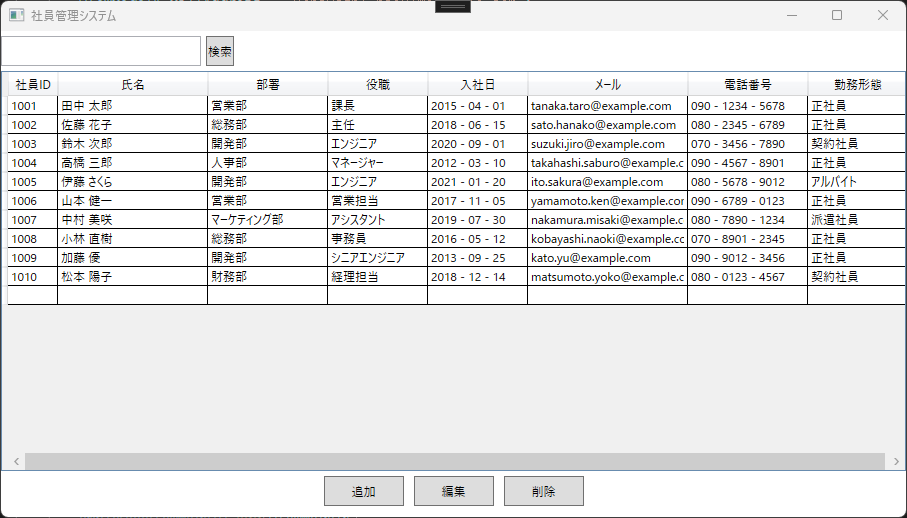

Development
あなたの業務、もっと効率化しませんか？
私は、業務用Windowsソフト開発（デスクトップアプリ or Webシステム）と、ホームページ制作を承っています。
☐ 業務の自動化・データ管理が出来るWindowsソフト開発
ローカル環境（インターネット未接続）で安全に動作する業務ソフト
複数のPCで共有できるサーバ型業務アプリ（Webシステム）
☐ ビジネスのオンライン展開を支援する静的ホームページ制作
商品・サービスのPRサイト（当ホームページのProductページを参照）
問い合わせフォームの設置（当ホームページのContactページを参照）
📑 電子帳簿保存法に対応した請求書発行、知っていますか？
2024年の電子帳簿保存法の改正により、請求書や見積書などの保存方法に大きな変化がありました。
PDFやExcelなどで作成した請求書でも、保存形式や運用ルールによっては「原本として認められない」ケースもあります。
当方では、電子帳簿保存法に準拠した請求書発行システムの構想・設計にも対応しております。
制度対応のご相談や、御社の業務に合わせたツール開発についても柔軟に対応可能です。
- 請求書を電子で発行しているけれど、このままで大丈夫？
- Excelで作っているけど、法的に問題ないか不安…
- 制度に対応した、シンプルな発行・保存ソフトが欲しい
このようなお悩みをお持ちの方は、ぜひ一度ご相談ください。
DX支援・業務効率化に役立つ業務ソフト開発（WPF/.NET）| 案件例
DX支援・業務効率化の導入メリット
| メリット | 導入後の効果 |
|---|---|
| ✅ 事務作業の自動化 | ルーチンワークを自動化し、業務時間を50%以上削減 |
| ✅ データのデジタル化 | 紙ベースの管理をなくし、検索・共有を迅速化 |
| ✅ ヒューマンエラーの削減 | 入力ミスや計算ミスを防ぎ、業務の品質を向上 |
1.WPF（Windows Presentation Foundation）を使った業務ソフト開発
個人事業主・企業向けの業務効率化を目的としたWindowsソフトの開発を承ります。業務の自動化・データ管理をスムーズにし、作業負担を軽減するソフトを提供いたします。
開発可能なソフト例
１．帳票作成・管理ソフト


２．データ管理ソフト

DX・業務効率化のためのソフト開発をお考えなら、まずはご相談ください！
📩 無料相談・お問い合わせはこちら2.静的ホームページの開発・保守
個人事業主・中小企業向けに、シンプルで管理しやすい静的サイトを提供します。スマホ対応・SEO対策を考慮し、事業のオンラインプレゼンスを向上させます。
制作可能なサイト例
１．企業ホームページ
２．ランディングページ
３．個人・店舗向けサイト
サポート内容
お問い合わせについて
「どのくらい費用がかかるか知りたいだけ」のお問い合わせも歓迎です。
まずはお気軽にご相談ください。（お見積り無料）
📩 お問い合わせはこちら！→お問い合わせフォームはこちらをクリック